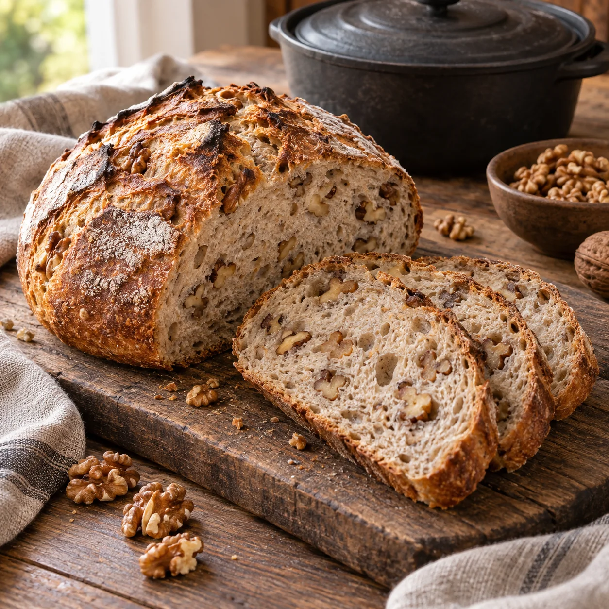

Was Kleines dazu · Brot, Buns & Teiggebäck
Walnussbrot
Rezept von Lena Wedel

Ein saftiges, rustikales Mischbrot mit vielen Walnüssen und kräftiger Kruste. Der Teig kann ganz klassisch mit den Händen oder der Küchenmaschine und alternativ im Thermomix zubereitet werden.
Zutaten
480 gWeizenmehl Type 550
100 gWeizenmehl Type 1050
100 gRoggenmehl Type 1150
430 mllauwarmes Wasser
10 gfrische Hefe
15 gSalz
2 ELneutrales Öl
20 gHonig
130 gWalnüsse
Normale Zubereitung
- Die Walnüsse grob hacken. Das lauwarme Wasser in eine große Schüssel geben, Hefe und Honig darin vollständig auflösen und etwa 5 Minuten stehen lassen.
- Alle drei Mehlsorten, Salz und Öl dazugeben. Den Teig mit den Knethaken der Küchenmaschine etwa 8 Minuten auf niedriger bis mittlerer Stufe kneten. Von Hand den Teig zunächst in der Schüssel vermischen und anschließend etwa 10 Minuten gründlich kneten.
- Die gehackten Walnüsse dazugeben und nur so lange weiterkneten, bis sie gleichmäßig im Teig verteilt sind.
- Den Teig in eine leicht geölte Schüssel geben, abdecken und an einem warmen Ort etwa 1–1 ½ Stunden gehen lassen, bis er deutlich an Volumen gewonnen hat.
- Den Teig auf einer leicht bemehlten Arbeitsfläche etwa zehnmal von außen zur Mitte falten. Anschließend zu einem runden oder länglichen Laib formen.
- Einen backofengeeigneten Topf oder Brotbacktopf mit Deckel leicht bemehlen. Den Brotlaib hineinlegen, ebenfalls leicht bemehlen und nach Wunsch einschneiden. Den Deckel aufsetzen.
- Den geschlossenen Topf auf einem Rost in die unterste Schiene des kalten Backofens stellen. Den Ofen auf 240 °C Ober-/Unterhitze einstellen und das Brot etwa 55 Minuten backen. Anschließend aus dem Topf nehmen und auf einem Gitter vollständig auskühlen lassen.
Zubereitung mit dem Thermomix
- Wasser, Hefe und Honig in den Mixtopf geben und 2 ½ Minuten bei 37 °C auf Stufe 2 erwärmen.
- Weizenmehl Type 550, Weizenmehl Type 1050, Roggenmehl, Salz und Öl dazugeben und 4 ½ Minuten auf der Teigstufe kneten.
- Die grob gehackten Walnüsse hinzufügen und weitere 30 Sekunden auf der Teigstufe unterkneten.
- Den Teig in eine leicht geölte Schüssel geben, abdecken und etwa 1–1 ½ Stunden gehen lassen, bis er deutlich an Volumen gewonnen hat.
- Den Teig auf einer leicht bemehlten Arbeitsfläche etwa zehnmal von außen zur Mitte falten und zu einem Laib formen.
- In einen leicht bemehlten, backofengeeigneten Topf mit Deckel geben. Den Laib bemehlen, nach Wunsch einschneiden und den Deckel aufsetzen.
- Den geschlossenen Topf auf einem Rost in die unterste Schiene des kalten Backofens stellen. Bei 240 °C Ober-/Unterhitze etwa 55 Minuten backen und anschließend auf einem Gitter auskühlen lassen.
Tipp
Das Brot erst anschneiden, wenn es vollständig ausgekühlt ist. So bleibt die Krume saftig und lässt sich sauber schneiden.